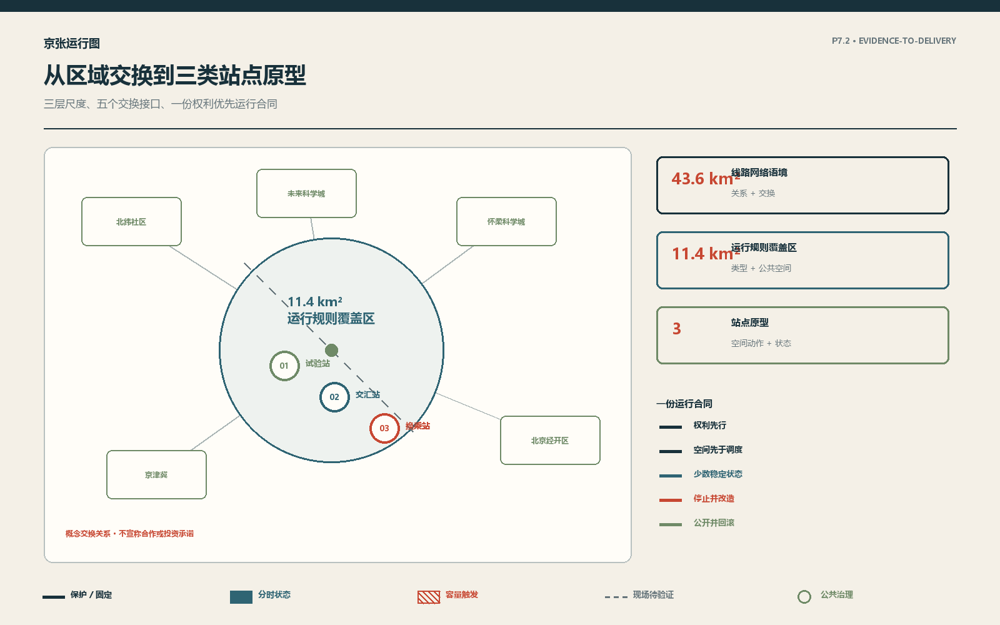
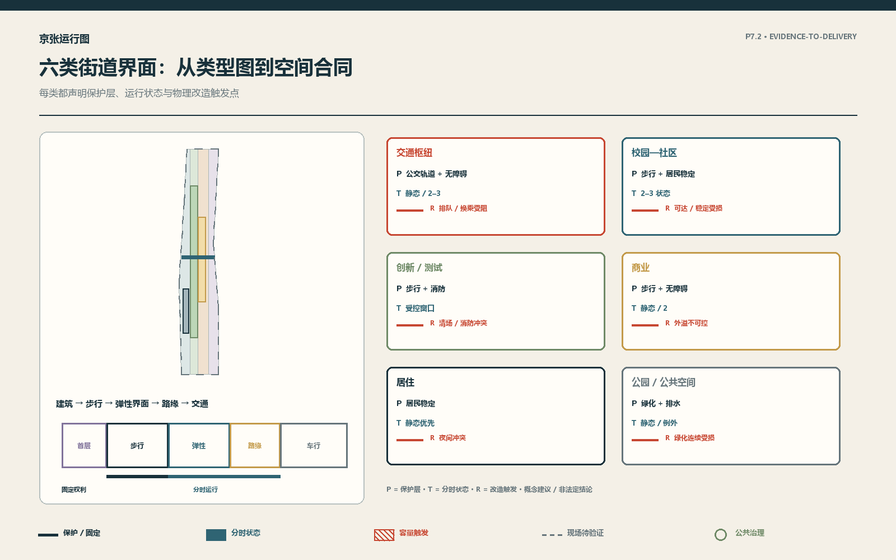
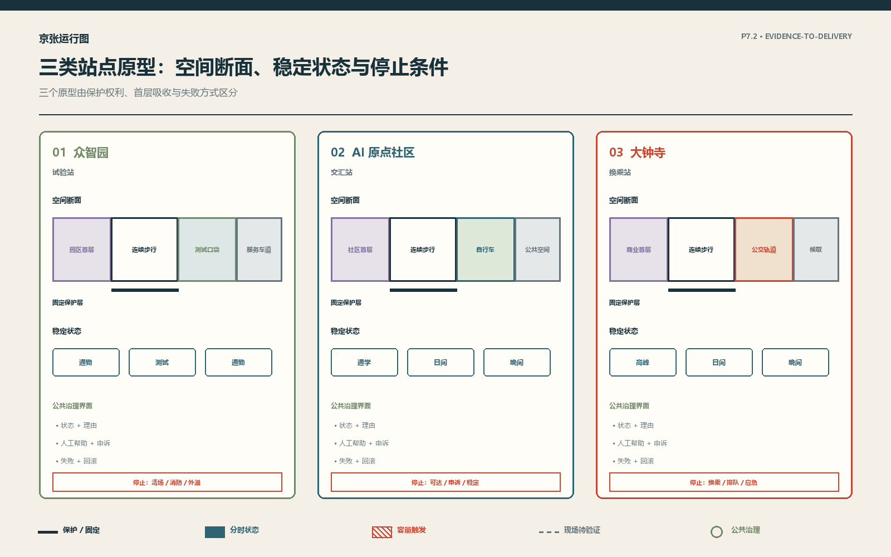
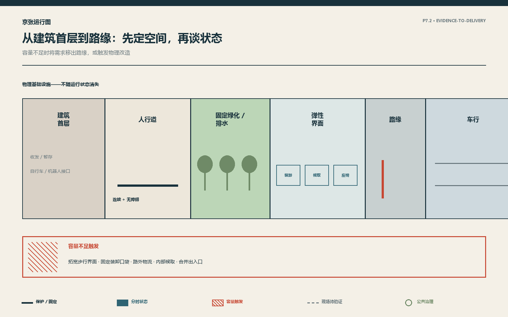
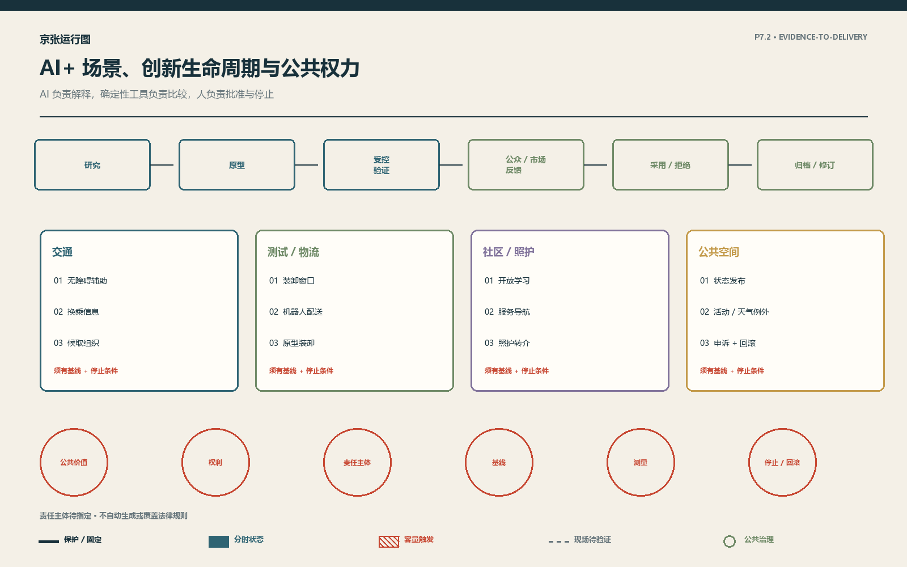
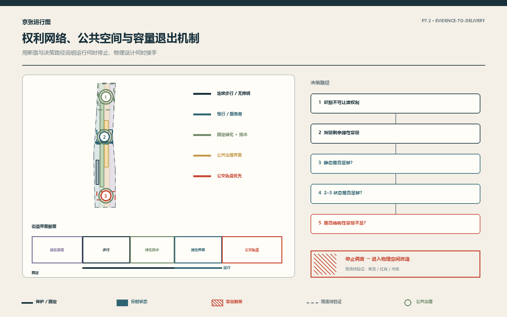
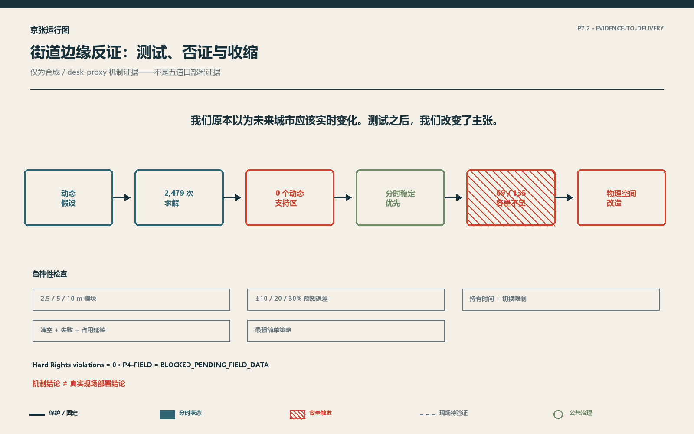
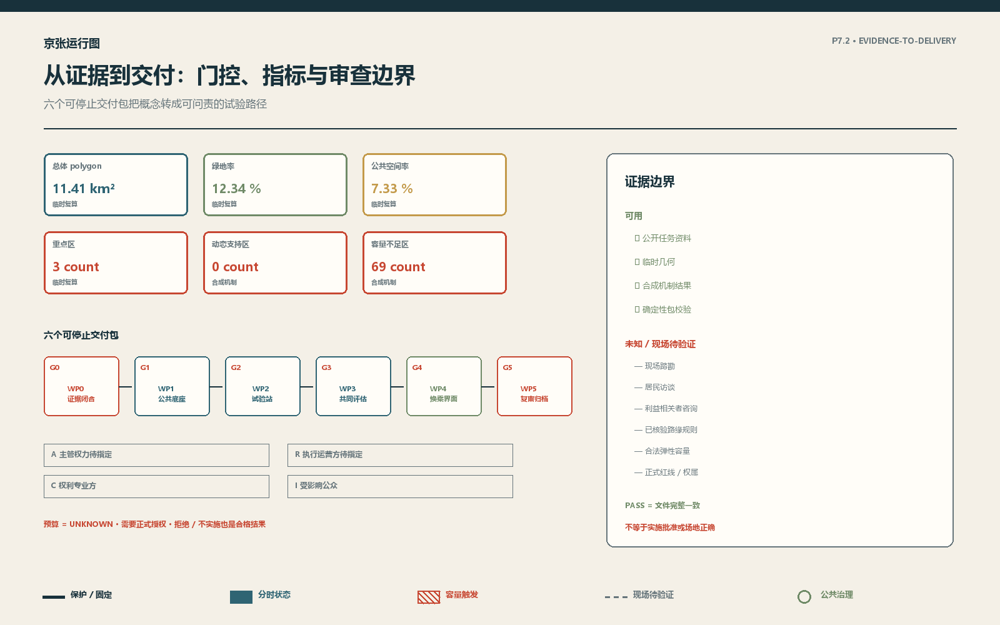

京张运行图 / Jing-Zhang Working Timetable
以运行图为设计类比，用权利、空间、证据、公开与回滚组织京张AI创新带；临时几何和现场缺口均显式披露。
京张运行图
核心概念与差异化机制
差异化机制不是高频控制平台，而是一套可审计的城市运行体系：先固定不可让渡权利，再判断物理容量；静态模式足够时不切换，只有时间差异有证据时才发布少数稳定状态；容量不足或例外场景越界时，停止调度并转入物理改造、人工审批或回滚。
一种有据、可逆的 AI 城市运行框架 方法论：有据开放城市 / Evidence-Governed Open City
权利先行，空间优先；以证据决定变化，以公开保证可逆。
京张运行图不是让 AI 实时接管城市的系统，而是一种规则先公开、有限且可回滚的城市运行框架。它借用“运行图”作为设计类比：在有限空间中明确权利、状态、时段、优先级和例外；先判断物理容量，再只在证据证明必要时发布少数稳定、可理解的分时状态。AI 帮助解释情景、整理候选方案和发现异常，确定性工具负责比较，人作批准与回滚决定。
我们原本以为未来城市应该实时变化。经过 2,479 次优化求解，我们改变了主张。 Fully Dynamic 被系统测试，但现实约束下更稳健的是少数稳定状态；容量不足时，运行图停止，物理设计接手。
设计依据与资料清单
方案以赛事公告和智能体任务书为任务依据，以城市设计、控规编制、国土空间用地分类等公开规范为专业边界；5 个外部案例仅用于比较“孵化、测试、公开、采用或拒绝”的机制，不移植其规模或绩效。来源 来源 标准
本包的现场证据边界为：Field visit = NONE；formal resident interview = NONE；formal stakeholder consultation = NONE；real OD data = NONE；verified legal flexible curb capacity = NONE。 公开/桌面资料有限，合成机制证据可用；P4-FIELD = BLOCKED_PENDING_FIELD_DATA。临时范围只用于概念表达和机器检查，不是法定红线。来源 空间数据

三层范围工作框架
在运行图的设计类比中，43.6 平方公里统筹研究层是线路网络语境，只识别高校、园区、社区、轨道、商业与公共空间之间的战略关系；11.4 平方公里总体设计层是运行规则覆盖区，建立街道、首层界面、蓝绿公共空间和创新生命周期的概念类型；三处重点区是三种运行条件下的站点原型。公告面积是公开文本中的约值，提交 polygon 为维护者临时几何，不用于权属、法定控制或精确工程计算。此处“运行图”仅为设计类比，不构成历史因果推导。来源 指标 深度
这一结构避免把整个范围画成逐米数字孪生：统筹层回答“关系”，总体层回答“类型”，重点区回答“原型”。若取得正式 CAD/GIS、现状普查和控规条件，所有空间层和面积指标必须重新计算。
统筹研究范围产业与未来城市研究
创新生态采用一条最小生命周期：Research → Prototype → Controlled Validation → Public / Market Feedback → Adoption or Rejection → Archive / Revision。众智园承担原型与受控验证的设计角色，AI 原点社区承担研究转译、学习和公众反馈，大钟寺承担公共/市场采用反馈；三者均标注为 PROVISIONAL DESIGN ROLE，不是现状产业事实。来源 来源 来源
前三个案例提供共享支持、测试报告和独立评估机制。来源 来源 来源
另两个案例提供公共登记与有期限受控测试机制；不可转移的是其组织规模、法律地位、资金、绩效或本地适用性。来源 来源
任何 AI 场景若缺少公共价值、责任运营者、非 AI 替代、权利保护、基线、测量窗口、停止条件或回滚路径，就不能进入城市。采用与拒绝同样是生命周期的正常结果。
Agent.1–Agent.6 任务书闭合
为避免六项任务变成六套互不相关的概念，以下响应全部服从“权利先行、空间优先；以证据决定变化，以公开保证可逆”。
Agent.1｜总体概念与功能统筹。 “百年京张文化带”落实为运行图的克制设计类比与公开规则界面；“都市 AI 生活体验带”落实为有非 AI 替代、人工帮助和停止条件的公共服务；“AI 融合创新带”落实为 Research—Prototype—Controlled Validation—Feedback—Adoption or Rejection—Archive / Revision 生命周期。五大功能分别落在研究与原型、生态协作、AI+ 场景、公共空间运营和透明治理。三区是三个站点原型；中关村科技服务翼只作为研究、人才、资本与专业服务的外部支持关系，小月河场景赋能翼只作为公共空间和场景测试关系。两翼均停留在 43.6 km² 战略关系层，不伪造精确边界或既有职能。来源 深度
Agent.2｜创新生态。 五个公开案例仅提取共享支持、测试报告、独立评估、公共登记和有期限试验机制。土地与空间由六类街道界面承载；人才通过三个站点角色连接；算力与数据只能进入有权限、可审计的受控设施；资本只能作为分阶段 gate，不能写成承诺；场景必须经过基线、验证、反馈和拒绝出口。众智园、AI 原点社区和中关村科技服务翼的角色均为设计建议，不是既有产业事实。来源 来源 来源
Agent.3｜AI+ 场景。 S01–S10 共 10 个场景对应 6 类分析 persona；S03 分时装卸、S04 受控机器人配送、S08 商业候取组织构成三个产业/服务测试验证场景。每个场景同时给出 AI 角色、非 AI 替代、Hard Rights、人工权力、基线、测量和停止条件；小月河只作为 FIELD_PENDING 的场景赋能关系，不生成未经核验的精确空间方案。指标 指标
Agent.4｜公共空间与治理地标。 三个“地标”首先是公共治理界面：众智园 Prototype Station 公布受控试验与失败日志；AI 原点 Exchange Station 提供学习、反馈和申诉；大钟寺 Transfer Station 公布换乘优先、人工帮助和回滚。共同组件库只有状态牌、权利台账、证据说明、人工帮助/申诉和回滚档案；荣誉展示同时记录被采用、被拒绝和作出贡献的方案，不建设黑箱科技雕塑。空间数据 深度
Agent.5｜文化与识别。 京张的路权、时刻、信号、调度和维护只作为设计类比；中关村创新文化通过“允许试验，也允许拒绝”进入创新生命周期；AI 文化通过公开状态、证据标签和人工责任进入日常界面。导视使用线路、时段、节点、账本与回滚标记，不把类比写成历史因果，也不使用第三方标识。来源 标准
Agent.6｜长期运营。 年度设置一次开放城市评审/示范期，季度审查场景证据，月度举行开发者—居民—运营者开放会，持续发布状态、反馈、事件和回滚日志。国际传播和招引只发布可复核案例、失败记录和开放问题；任何活动都必须有责任主体、许可、输出和停止条件。当前 RESPONSIBLE_BODY = TO_BE_ASSIGNED，不虚构主办机构、合作企业或已批准活动。空间数据 深度
<!-- P7.2:REGIONAL:START -->
区域协同：五个可退出的交换接口
区域协同不等于宣称合作已经发生。下列关系仅是 43.6 km² 战略研究层的概念接口；每项都以公开输出、双向反馈和退出条件约束，不制造园区边界、合作协议或投资承诺。
| 对外接口 | 本方案可交换的内容 | 不可越过的边界 | 进入 / 退出条件 |
|---|---|---|---|
| 北纬社区 | 无障碍、照护转介与社区反馈方法 | 不代表居民意见或既有合作 | 有授权联络与可访问参与渠道才进入；无法回应申诉即退出 |
| 未来科学城 | Research—Prototype—Validation 的方法与公开试验记录 | 不转移机构职能、绩效或资源承诺 | 有可比基线和责任主体才交换；不可复核即归档 |
| 怀柔科学城 | 科研原型的安全评估、失败记录与人工接管要求 | 不声称设备、团队或项目已接入 | 权利与安全门槛闭合才讨论；无回滚路径即拒绝 |
| 经开区 | 工业验证、物流接口与规模化前的停止条件 | 不构成产业落位或招商承诺 | 受控验证通过后才讨论转化；外溢不可控即停止 |
| 京津冀 | 可审计场景合同、互操作字段与区域物流议题 | 不替代跨区域规划与行政协调 | 仅交换公开、可复用字段；权限或口径不一致即暂停 |
这五个接口共同回答“如何协同”，而不是伪造“已经协同”：交换的是可审计的方法、失败经验和最小数据字段，具体机构、协议、场地与资源均待正式协商。来源 深度 <!-- P7.2:REGIONAL:END -->
总体设计范围城市更新与控规深度城市设计
11.4 平方公里层以六类街道界面组织概念设计：Transit Edge、Campus–Community Edge、Innovation/Test Edge、Commercial Edge、Residential Edge、Park/Public-Space Edge。每类先划定固定保护层，再决定静态、2–3 个分时稳定状态，或因容量不足转入物理改造。空间数据 深度 深度
空间连续体为 Building Edge → Sidewalk → Flexible Interface → Curb → Traffic。建筑首层应吸收不必长期占用道路的收发、候取、物流暂存、自行车与机器人接口；无障碍入口、树木、排水、公交站台和安全隔离属于固定层。缺少正式红线、产权、建筑普查、容积率和高度控制，因此不作逐地块拆改留或开发强度结论。来源 来源

重点区域详细设计
三处原型不是同一模块换标题；它们由不同权利冲突和不同失败方式驱动。空间数据 深度
众智园｜试验站 / Prototype Station。 三个空间动作：固定连续步行与无障碍保护带；把原型装卸、机器人停靠和试验界面收进可控口袋；以清晰公告界面连接园区首层与街道。稳定状态最多为 AM 通勤、日间测试/物流、PM 通勤。未知项包括真实企业物流、许可主体、消防/市政条件。
AI 原点社区｜交汇站 / Exchange Station。 三个空间动作：缝合校园—社区慢行；把潮汐自行车与配送从无障碍通道分离；让首层公共服务与晚间公共空间共用但不牺牲居民稳定。状态最多为通学/通勤、日间社区、晚间社区。未知项包括居民意见、校园边界、真实公交与骑行需求。
大钟寺｜换乘站 / Transfer Station。 三个空间动作：轨道与公交上下客权利优先；组织步行连通和自行车停放；将商业装卸、网约上下客与晚间活动限定在剩余界面。状态最多为交通高峰、日间商业、晚间商业。未知项包括站点客流、道路红线、商业后勤与权属。


AI 创新生态、人才画像与 AI+ 场景
Design Personas — Not Survey Respondents。 本方案使用 6 类分析 persona：轮椅/行动不便者、居民、员工/研究者/学生、配送/服务人员、公共交通乘客、公共空间访客。它们把权利和冲突显性化，不代表居民抽样或已验证需求。来源
10 个场景采用同一合同；所有阈值须在真实基线后设置，责任主体未指定时为 TO_BE_ASSIGNED：
| ID / 场景 | 用户与地点 | AI 角色 / 非 AI 替代 | 权利、测量与停止 |
|---|---|---|---|
| S01 无障碍出行辅助 | 行动不便者；三处公共界面 | 解释障碍报告；人工服务台/无障碍导视 | 连续通行；FIELD_PENDING；误导或无人接管即停 |
| S02 轨道换乘提示 | 乘客；大钟寺 | 聚合异常解释；固定时刻表与人工广播 | 公交轨道优先；按服务窗口测量；信息不一致即回滚 |
| S03 分时装卸窗口 | 配送员；众智园 | 聚类需求、生成候选时段；固定装卸湾 | 无障碍/消防；真实基线待补；越权占用即停 |
| S04 受控机器人配送 | 服务人员；众智园 | 识别异常、记录试验；人工推车 | 步行者优先；限定窗口；无人工接管即停 |
| S05 开源学习与成果说明 | 学生/公众；原点社区 | 解释资料、匹配活动；人工讲解/纸质目录 | 隐私与可访问性；反馈审查；错误不可纠正即停 |
| S06 社区服务导航 | 居民；原点社区 | 导航公开服务；人工窗口/电话 | 不画像、不差别待遇；月度审查；申诉失败即停 |
| S07 辅助照护转介 | 居民；社区界面 | 只做服务检索与转介；人工热线 | 不诊断；事件审计；出现医疗替代暗示即停 |
| S08 商业候取组织 | 乘客/商户；大钟寺 | 聚合候取压力；固定候车区与人工调度 | 交通权利优先；时段观察；外溢不可控即停 |
| S09 公共空间状态发布 | 所有人；三处界面 | 解释当前/下一状态；固定公告牌 | 可理解、可申诉；持续日志；公告失真即回滚 |
| S10 活动/极端天气例外模式 | 访客/运营者；总体层 | 汇总公开事件与风险；预定义人工预案 | 紧急权利优先；逐事件复盘；授权不足即不启用 |
场景证据状态以 DESIGN_HYPOTHESIS 或 FIELD_PENDING 为主；Curb 比较是 SYNTHETIC_TESTED，不是现场验证。AI 不直接生成优化器数值、不自动发布法律规则，也不越过人工权力。来源 标准

用地、建筑规模与拆改留方案
提交几何是最低充分的概念分区，用于验证文件合同和表达界面类型。land_use.geojson 完整分区临时总体范围；建筑基底是概念提案，不是现状测绘。保留/改造/拆除只提供决策框架：先查合法性、结构安全、文化价值、碳与公共用途，再由专业调查和法定程序决定；本包不逐栋裁决。空间数据 空间数据 标准
临时几何复算值一律标为 GEOMETRY_DERIVED_PROVISIONAL。容积率、高度、建筑密度、退线、权属、拆迁和预算保持 UNKNOWN，不能因通过文件校验而被视为专业正确。指标 深度
交通、轨道、市政与公共服务设施
交通优先级为步行连续/无障碍、过街安全、公交轨道、消防应急、固定基础设施，剩余空间才进入装卸、候取、自行车与公共活动。对外交通、道路微循环、轨道换乘和市政接口在图层中只作概念关系；道路红线、客流、管线、防洪、消防和运营许可均待正式资料。空间数据 深度
Street-Edge Proof Case（研究过程内部历史名为 Curb OS）压缩了 P0–P4：初始假设认为 Fully Dynamic 可能增加价值；确定性优化器在匹配合成情景、负向控制、模块粒度、预测误差和执行负担下比较策略。P4-SIM 中 0 个结构化区域支持 Dynamic，69/135 为 CAPACITY_LIMITED，结论为 SEMISTATIC_SIM_PREFERRED。这只证明一种机制判断：若简单静态或 2–3 个分时稳定状态已取得现实收益，就不应为“更智能”而高频变化；若权利与同时需求超过容量，应停止调度并进入物理改造。来源 指标 指标


蓝绿空间、公共空间与城市风貌
公共空间先做到可步行、无障碍、无 AI 也可用，再叠加治理界面。树木、排水、连续绿化、坡道和固定隔离不随时段消失；低交通压力时可由已批准状态开放座椅、活动支持或公园延伸。三处公共界面分别发布当前状态、下一状态、保护权利、试验依据、人工帮助、反馈/申诉与失败回滚档案。空间数据 空间数据 深度
文化叙事是克制的设计类比：铁路依靠路权、时刻、信号、调度和维护；AI 时代的城市运行同样需要权利、稳定状态、受控转换、透明规则与回滚。这不是历史因果推导，也不把技术做成雕塑。视觉以保护线、时刻标记和证据印记构成，不使用第三方 logo。
更新项目清单、实施政策与分期计划
近期只做资料闭合和可逆试验准备：取得正式边界、现场普查、无障碍共创、利益相关者协商、基线与责任主体。中期可在授权后建设三个治理界面并测试少数稳定状态。长期仅在独立证据证明增量价值时复审更高频策略；任何试验可因权利侵害、数据失真、无人负责或无法回滚而停止。空间数据 深度
最小运营节奏为：年度开放评审/示范期；季度场景证据审查；月度开发者—居民—运营者开放会；持续发布规则、事件、反馈与回滚日志。RESPONSIBLE_BODY = TO_BE_ASSIGNED，预算为 UNKNOWN，实施须 REQUIRES_FORMAL_AUTHORIZATION。
<!-- P7.2:DELIVERY:START -->
从概念到试验：六个交付包与责任合同
实施不以虚构部门或预算换取“落地感”。本方案只定义角色合同：A = 依法作最终决定的主管权力（待指定）；R = 经合法程序确定的执行运营方（待指定）；C = 无障碍、公交/交通、消防、市政、社区、数据与法律专业方；I = 受影响公众。预算保持 UNKNOWN，资源只列必需类别。
| 包 | 最小交付与空间动作 | A / R / C / I | 许可与资源类别 | 基线与验收门 | 停止、恢复与回滚 |
|---|---|---|---|---|---|
| WP0 证据闭合 | 正式边界替换；逐段 rights ledger；现场/利益相关者缺口台账 | A待指定 / R调查团队 / C权利专业方 / I公众 | 调查许可；测绘、无障碍、交通、市政、法务 | 每个 Hard Right 已确认或显式未决；任一关键权利未决则不得进入运营试验 | 证据冲突即冻结；保留原规则，修订后重新审查 |
| WP1 公共运行图底座 | 三处治理界面；纸质/离线替代；状态、理由、下一状态、申诉与回滚记录 | A待指定 / R公共界面运营方 / C无障碍与数据治理 / I所有使用者 | 公共空间与信息发布许可；界面制作、人工服务、日志 | 先记录现行规则与人工服务基线；通过可访问性、离线可用和责任可追溯审查 | 信息不一致、无法人工接管或申诉失效即撤下动态发布，恢复固定公告 |
| WP2 众智园受控试验 | 首层服务口袋；固定步行保护层；限定测试/装卸窗口 | A待指定 / R园区运营方 / C消防、物流、无障碍 / I员工与配送人员 | 园区与道路运营许可；安全员、清场、标识、人工接管 | 与固定装卸湾和现行规则做同窗基线；Hard Rights 零侵害且失败可复盘才继续 | 清场失败、消防冲突、步行侵占或外溢不可控即恢复静态规则 |
| WP3 原点社区共同评估 | 校园—社区慢行缝合；自行车分离；社区反馈/申诉界面 | A待指定 / R社区公共服务运营方 / C居民、校园、无障碍专业方 / I居民与学生 | 参与及场地许可；主持、翻译/无障碍、观察记录 | 无正式居民参与前不发布需求结论；验收以可达、可申诉、非AI替代持续可用为门 | 居民稳定受损、差别待遇或申诉无回应即回到固定社区服务模式 |
| WP4 大钟寺换乘界面 | 公交轨道优先层；步行/骑行组织；剩余界面候取装卸 | A待指定 / R换乘运营方 / C公交、轨道、交管、商业后勤 / I乘客与商户 | 交通运营与占道许可；人工调度、围护、应急 | 先取得客流、冲突与外溢基线；只有换乘权利不下降且外溢可控才保留分时状态 | 换乘受阻、队列外溢、信息冲突或应急受阻即恢复交通优先静态模式 |
| WP5 年度复审与归档 | 年度开放审查；季度证据复核；月度开放会；持续事件/回滚日志 | A待指定 / R独立秘书处 / C专业与公众代表 / I公众 | 档案、隐私、会议与发布规则；记录与独立复核 | 每一场景须能回答基线、结果、失败、责任与退出；不能复算则不进入下一周期 | 到期自动复审；无责任主体、无资源、无公共价值或无退出条件则归档/拒绝 |
六个包采用 G0 证据 → G1 权利 → G2 空间容量 → G3 受控运行 → G4 公共复核 → G5 采用或拒绝 的门控顺序。任何包都可停在前一门；“未实施”或“被拒绝”是合格结果，不以部署数量作为成功指标。空间数据 深度 深度
constraints.geojson 保持空集合是有意的证据披露：当前没有可被合法空间化的已核实红线、管线、消防、权属或路缘规则。它是待闭合项，不再被引用为已有约束图；相关设计判断只回引实际存在的概念道路、公共空间、建筑层与资料缺口登记。 <!-- P7.2:DELIVERY:END -->
指标体系、面积复算与合规矩阵
指标分三类：临时几何可复算值、合成机制结果、未知/待控制值。11.4 平方公里和三处面积使用公告约值作范围说明；提交 polygon 计算值仅检查拓扑。指标 指标
P4 的 0 和 69/135 明确标注为 synthetic structured regimes，不是人流、绩效或部署结果。指标 深度
文件 PASS 只说明 artifact integrity、语法一致和确定性自检，不说明规划有效性、社会合法性、场地正确、审批通过或居民接受。任务—章节—图层—指标—来源关系见 compliance_matrix.json，标准与缺口见 standard_matrix.json 和 design_depth_matrix.json。

风险、版权与合规说明
最大风险不是“AI 不够聪明”，而是缺少现场、主体和正式条件却产生确定语气。本方案明确保留：官方精确边界、道路红线、权属、建筑普查、市政消防、真实 OD、无障碍共创、居民与机构意见、预算、责任主体和许可均未闭合。三重点区角色、场景和空间动作属于概念设计建议或现场待验证假设。来源 来源 深度
AI 生成文本、结构、原创程序化图件和离线页面；人选择问题方向、判断研究 gate、接受/拒绝战略转向并授权最终投稿。AI 不替代规划师、主管部门、工程师或公众参与。本包无远程字体、地图瓦片、脚本、跟踪器或未授权网络图片；版权与工具说明见 report/copyright_statement.md。
参考资料
- 赛事公告、智能体任务书与仓库 source registry 来源 来源 来源
- 城市设计与控规编制公开规范 标准 标准 来源
- 国土空间用地分类公开规范 标准 来源
- STATION F、IMDA AI Verify、UK AISI 官方页面 来源 来源 来源
- Helsinki AI Register 与 EU AI sandbox 官方页面 来源 来源
- Curb OS P4-SIM bounded proof summary 来源
- 完整用途、限制、访问日期与许可说明见
sources.json。 来源